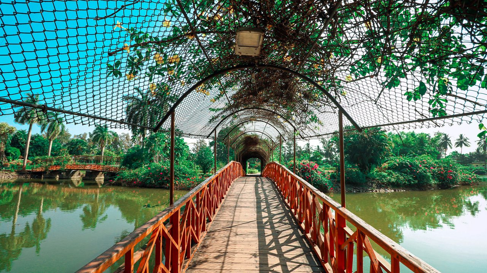
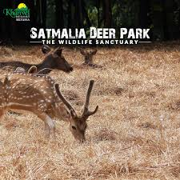
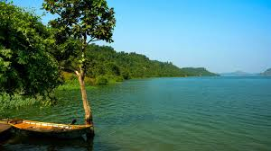
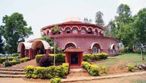

Vanganga Lake Garden

A beautiful, picturesque garden surrounding a central lake, known for its wooden bridges, scenic pathways, and tranquil boating facilities.
Hirwa Van Garden

A lush green garden with cascading waterfalls, dense foliage, and stone walls, serving as a popular picnic spot and known for its aesthetic tranquility.
Satmalia Deer Sanctuary

SanctuaryA protected area near the Vasona Lion Safari, known for its various species of deer and antelopes, offering a natural and serene environment.
Dudhni Lake

A large, peaceful reservoir created by the Madhuban Dam, offering various water sports, kayaking, and boating, surrounded by rolling hills.
Tribal Cultural Museum

Showcases the rich culture, history, and artifacts of the local tribal communities (especially the Warli, Konkana, and Dhodia tribes), providing insight into their unique way of life.